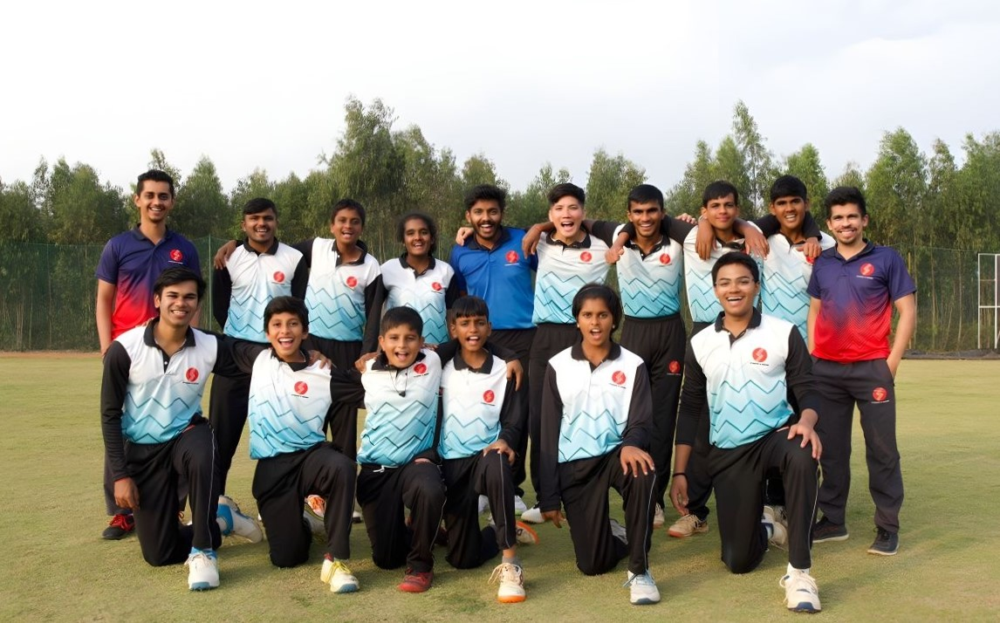

Master the Art of Spin Bowling
Learn from highly experienced spin experts.

Master the Art of Spin Bowling
Learn from highly experienced spin experts.

SIX is under the supervision and guidance of Director & Head Coach Mr. Karthik Jeshwanth, a former Indian first-class cricketer and Former Ranji Trophy captain.

SIX offers cricket programmes across all age groups and categories. Whether you are an aspiring bowler or a batter, we have a programme that caters to everyone.

SIX is located at the Padukone-Dravid Centre for Sports Excellence (CSE), Bangalore, India’s finest integrated multi-sport complex which is built to encourage sports at every level.

SIX Cricket is a cricket academy located within the cutting-edge Padukone-Dravid Centre for Sports Excellence in Bangalore. With a focus on the wholesome development of every trainee, SIX aspires to create well-rounded humans by building their skills and values through their relationship with cricket. The academy is grounded in the spirit of cricket for all, and the philosophy that cricket is a sport that must be learnt and not taught. The academy welcomes boys and girls of all ages and levels to play, experience, learn and grow.